كل ما تم تحسينه وتطويره وبرمجته في الموقع ولوحة التحكم: من معالجة ملاحظات تقرير الفحص، إلى الصفحات والأقسام التفاعلية الجديدة، إلى الفحص الأمني والاختبارات الآلية
albaseetsoft-ye.com/ar
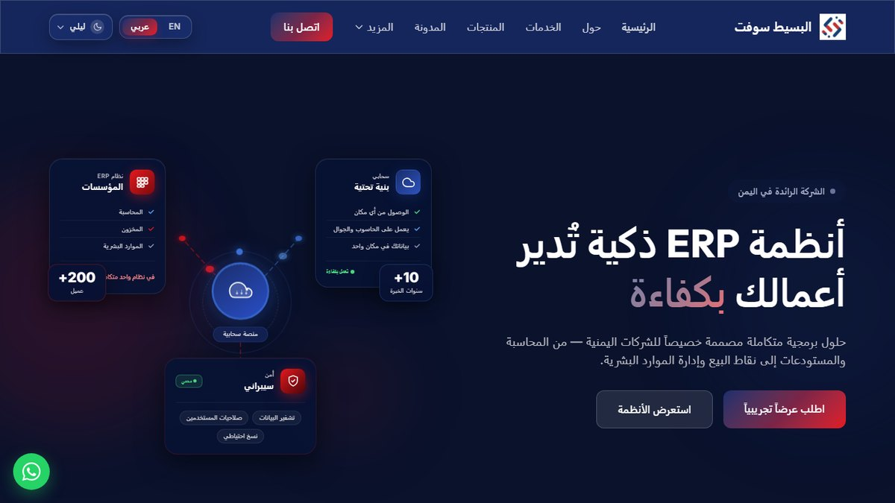
21/21 بنداً من الخطة12/12 ملاحظة عولجت13 إضافة جديدة67 اختباراً آلياً
الطالب
عبدالسلام عارف سلطان
الأستاذ المشرف
الأستاذ إدريس الشباطي
المستودع / الفرع
i0midris/profile — فرع abdalsalam
تاريخ التقرير
8 نوفمبر 2026
وثيقة داخلية تُقدَّم إلى الأستاذ المشرف وإدارة شركة البسيط سوفت — كل الصور في هذا التقرير لقطات حقيقية من الموقع بعد التطوير
التقرير الشامل لتطوير موقع البسيط سوفت — نوفمبر 2026شركة البسيط سوفت
1 الملخص التنفيذي
الصورة الكاملة في صفحة واحدة
بدأ العمل بتقرير فحص رصد 12 ملاحظة على الموقع المنشور، وخطة من 21 بنداً في ثلاث مراحل. نُفّذت الخطة كاملة، ثم أُضيفت 13 إضافة تجعل الموقع يشرح منتجات الشركة ويقود الزائر إلى طلب عرض أو التواصل، وانتهى العمل بفحص شامل للأخطاء والأمان. كل ذلك على فرع مستقل (abdalsalam) دون المساس بالنسخة المنشورة، وكل بند في commit يحمل رقمه.
21 / 21
بنداً من خطة التحسين نُفِّذ في الكود
12 / 12
ملاحظة من تقرير الفحص عولجت
13
إضافة بعد الخطة (أقسام وأدوات ورسوم)
2 ← 67
اختباراً آلياً ناجحاً (354 تحققاً)
4 ← 12
قسماً في الصفحة الرئيسية
+60
صفحة يزورها الفحص الآلي بالعربية والإنجليزية
46
commit على الفرع لكل منها رقم بندها
162
ملفاً تغيّر، منها 106 ملفات جديدة
albaseetsoft-ye.com/ar
قبل
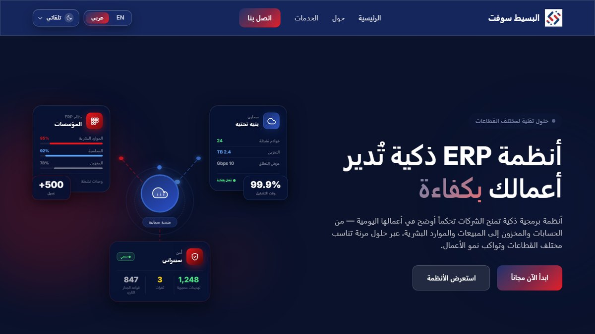
الموقع المنشور حالياً: واجهة جيدة، لكن خلفها رابط واتساب لا يعمل، وأرقام متعارضة، وعنوان مقصوص على الجوال، وبطء في الخادم.
abdalsalam · /ar
بعد
بعد التطوير: نفس الهوية والألوان، مع شعار الشركة، وزر «اطلب عرضاً تجريبياً»، وشريط أنظمة متحرك، وأرقام من مصدر واحد.
أبرز ما تغيّر
1
يعمل كما يجب
واتساب والهاتف والنماذج تعمل، والأرقام صحيحة، ولا قص على الجوال.
2
أسرع وأخف
صفحات مخزّنة جاهزة بلا جلسات ولا Cookies، وصور WebP، وسكربتات أقل.
3
يعرض المنتجات ويبيعها
صفحة لكل نظام، ونموذج «طلب عرض تجريبي»، ومساعد يقترح النظام المناسب.
معنى الحالات:تم منفّذ ومختبَر في الكود. يكتمل على الخادم الكود جاهز ويظهر أثره بعد النشر وضبط الخادم. بانتظار المحتوى القسم جاهز ويظهر تلقائياً حين تضيف الشركة محتواها الحقيقي.
صفحة 3 من 12
التقرير الشامل لتطوير موقع البسيط سوفت — نوفمبر 2026شركة البسيط سوفت
3 السرعة والجوال والبحث والأمان
قبل وبعد بالأرقام
القياسات أُخذت على نسخة الفرع في بيئة التطوير بنفس بيانات الموقع المنشور. مؤشرات الخادم (زمن الاستجابة وتقييم Lighthouse) تُقاس على الموقع بعد الدمج والنشر.
المقياس
قبل
بعد
طريقة التحقق
رابط واتساب
لا يعمل (00967…)
يعمل (967…)
اختبار آلي لخمس صيغ أرقام
مرات تحميل Ahrefs
2
1
فحص HTML الصفحة
أرقام وهمية في الواجهة
11 رقماً
0
بحث في الشيفرة
امتداد العنوان (شاشة 375px)
إلى 459px (مقصوص)
16 – 359px
قياس في المتصفح
اسم الشركة على الجوال
46 من 106px ظاهر
كامل
قياس في المتصفح
أقل تباين للنص
2.7 : 1
≥ 4.5 : 1
قياس كل نص بالوضعين الليلي والنهاري
Cookies لكل زيارة
2 + سطر في قاعدة البيانات
0
اختبار آلي
زمن بناء الرئيسية (محلياً)
0.87 ث
0.60 ث
curl، والباقي زمن PHP بلا OPcache
ترويسات الأمان
HSTS فقط
+5 ترويسات
اختبار آلي وفحص المتصفح
أزرار وروابط بلا وصف
روابط التواصل الاجتماعي
0
فحص الصفحات
صفحات تُفحص آلياً
صفحة واحدة
+60 صفحة وكل شاشات اللوحة
اختبار SmokeTest
الاختبارات الآلية
2
67 (354 تحققاً)
phpunit
مؤشرات قياس النجاح (من خطة التحسين)
المؤشر
قبل البدء
المستهدف
بعد التنفيذ
زمن استجابة الخادم (TTFB)
2.4 – 9 ث
أقل من 0.8 ث
التخزين جاهز في الكود بعد ضبط الخادم
زمن ظهور المحتوى (LCP)
بطيء
أقل من 2.5 ث
المحتوى ظاهر دون انتظار JS يُقاس بعد النشر
صفحات الموقع (بلغتين)
8 صفحات
25 صفحة فأكثر
18 مساراً، وكل منتج ومقال ودراسة حالة صفحة بانتظار المحتوى
طلبات التواصل والعروض
غير مقاسة
تتبّع شهري
تُعدّ في لوحة التحكم وتُرسل لـ Analytics جاهز
محركات البحث: لكل صفحة عنوان ووصف وصورة مشاركة خاصة بها، وروابط اللغتين (hreflang)، وخريطة موقع تتحدث تلقائياً بالمنتجات والمقالات، وبيانات منظمة (Organization وSoftwareApplication وFAQ وArticle) تساعد Google على عرض الموقع بشكل أغنى في النتائج.
صفحة 4 من 12
التقرير الشامل لتطوير موقع البسيط سوفت — نوفمبر 2026شركة البسيط سوفت
4 صفحات جديدة تعرض المنتجات وتجلب الطلبات
من موقع تعريفي إلى موقع يبيع
كان الموقع يعرّف بالشركة فقط. صار لكل نظام صفحة، ولكل زائر طريق واضح إلى طلب عرض تجريبي، وللشركة مكان لنشر خبرتها. الصور التالية بمحتوى معاينة تقريبي يُحذف بأمر واحد، ويحل محله محتوى الشركة الحقيقي.
/ar/products
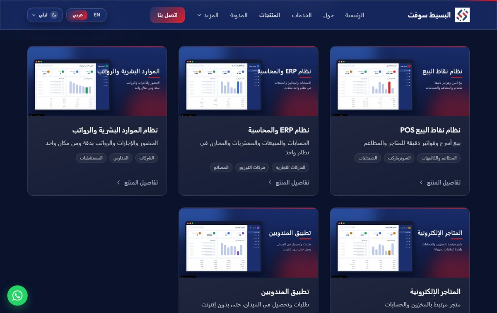
1صفحة المنتجات: بطاقة لكل نظام بصورته ووصفه، ومشاهد القطاعات ومساعد الاختيار.
3نموذج طلب عرض تجريبي: النظام مختار مسبقاً، والطلب يصل للوحة التحكم وبالبريد.
/ar/portfolio/10
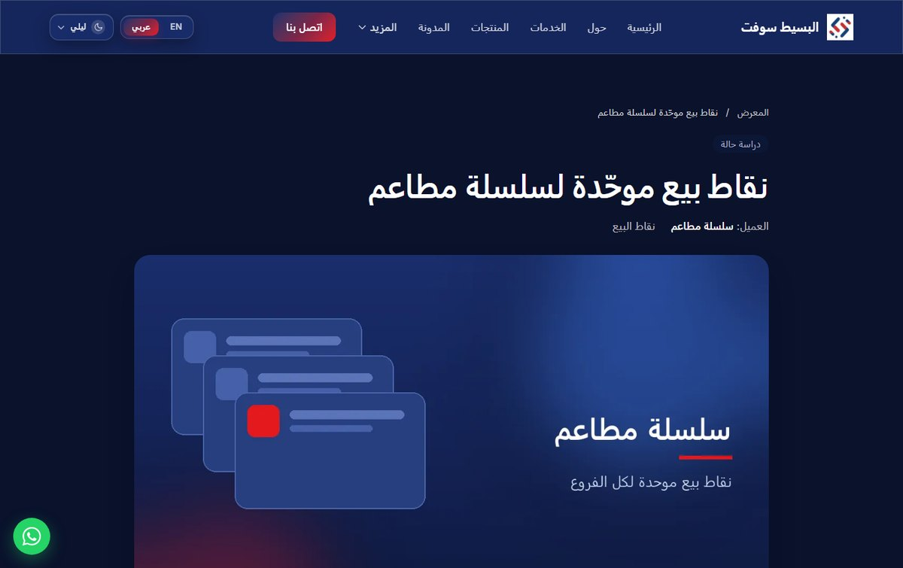
4دراسة حالة: التحدي والحل والنتيجة لكل مشروع، وشعارات العملاء الموافقين.
/ar/blog/how-to-choose-accounting-system
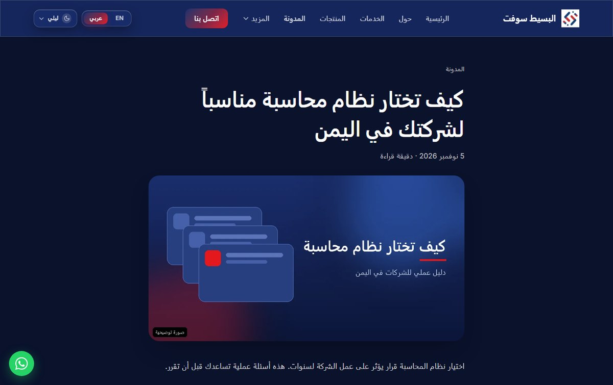
5المدونة التقنية: مقالات بصيغة Markdown آمنة، ونشر مجدول، وكل مقال في خريطة الموقع.
/ar/page-that-does-not-exist
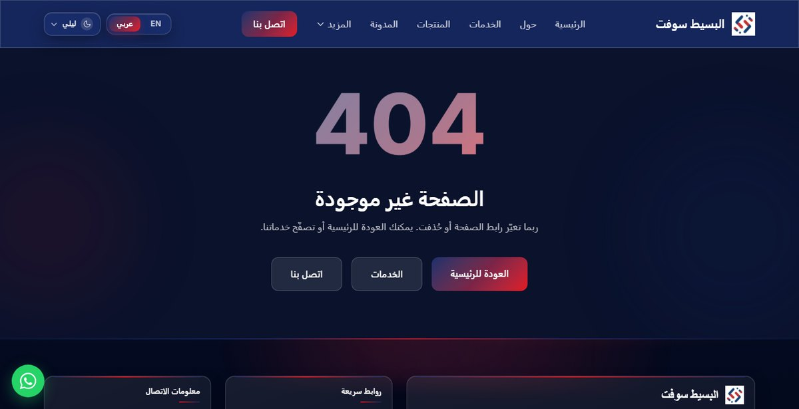
6صفحة 404 مخصصة: بتصميم الموقع ولغته، مع طرق للعودة بدل صفحة الخطأ الافتراضية.
صفحة 5 من 12
التقرير الشامل لتطوير موقع البسيط سوفت — نوفمبر 2026شركة البسيط سوفت
5 رسوم متحركة تحكي قصة الشركة
مرسومة بالكود، لا صور جاهزة
أُضيفت إلى الرئيسية أقسام تُري الزائر نفسه في المشهد. كل الرسوم مرسومة بـ SVG داخل الكود بألوان الشركة وأسلوب لوحتها الرئيسية، فهي خفيفة وحادة على كل الشاشات، وتعمل حركتها دائماً.
/ar#sectors
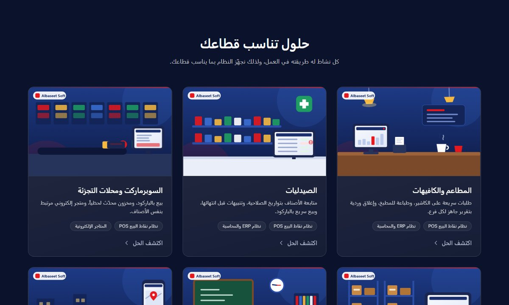
«حلول تناسب قطاعك»: 6 مشاهد متحركة لأماكن عمل حقيقية: مطعم، صيدلية، سوبرماركت، مستودع، مدرسة، شركة توزيع. في كل مشهد شاشة نظام البسيط سوفت تعمل: أعمدة بيانات ترتفع، وفواتير تُطبع، وشاحنة تتحرك على الخريطة.
/ar#how-we-work
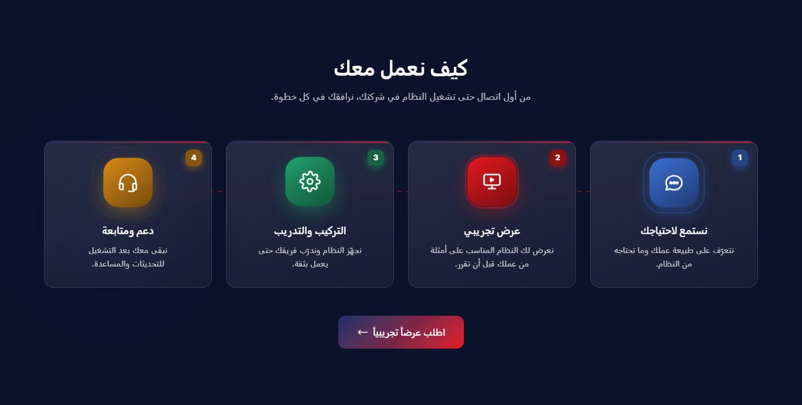
«كيف نعمل معك»: 4 خطوات من الاستماع للاحتياج إلى الدعم، بأيقونات تطفو وتنبض وخط متحرك يربطها.
/ar · الوضع النهاري
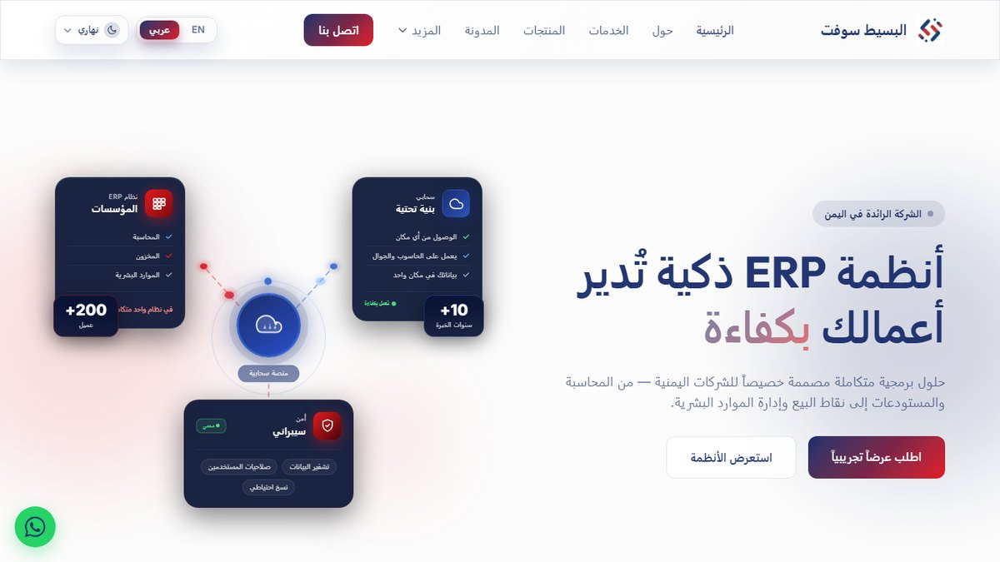
الوضع النهاري: كل قسم جديد صُمّم للوضعين، وقيس تباين نصوصه في كليهما.
شريط الأنظمة المتحرك تحت الواجهة: أنظمة الشركة تمر باستمرار ويتوقف عند المرور بالمؤشر، ومعه لمعة ضوئية على البطاقات وشريط تقدّم القراءة أعلى الصفحة.
صفحة 6 من 12
التقرير الشامل لتطوير موقع البسيط سوفت — نوفمبر 2026شركة البسيط سوفت
6 أدوات ذكية تساعد الزائر على القرار
مساعد الاختيار والأسئلة الشائعة
مساعد «اختر النظام المناسب لعملك» يسأل الزائر 3 أسئلة ثم يقترح النظام الأنسب وأنظمة مكمّلة. وإن اختار «نشاط آخر» وكتب نشاطه بكلماته، يحلّله الموقع ويحدد أقرب قطاع، ويُظهر شاشة «جاري التفكير» قبل النتيجة.
/ar#system-finder
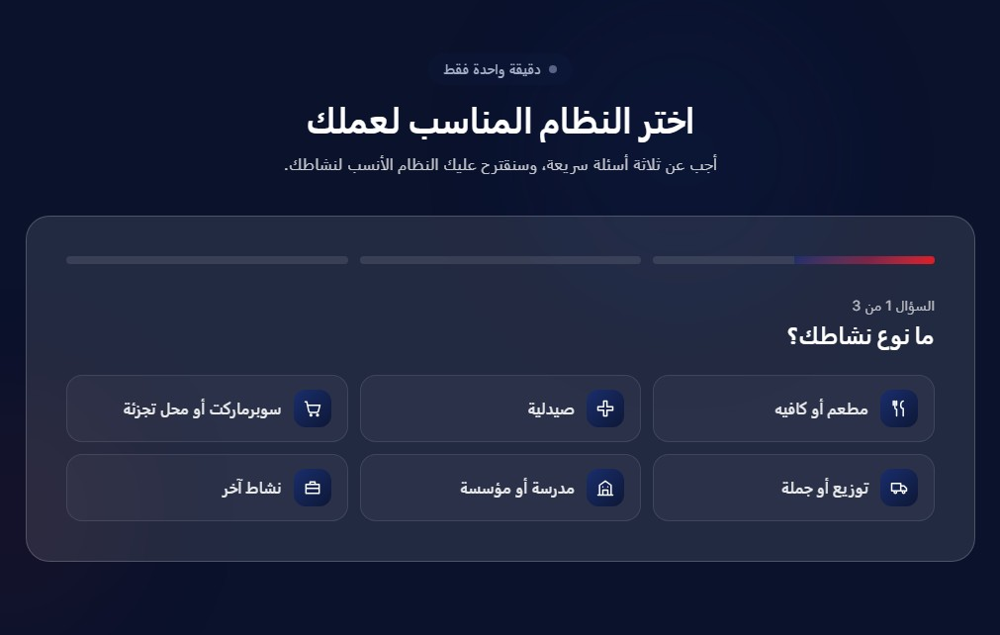
الخطوة الأولى: نوع النشاط بأيقونات، وشريط تقدّم، وخانة «نشاط آخر».
/ar#system-finder
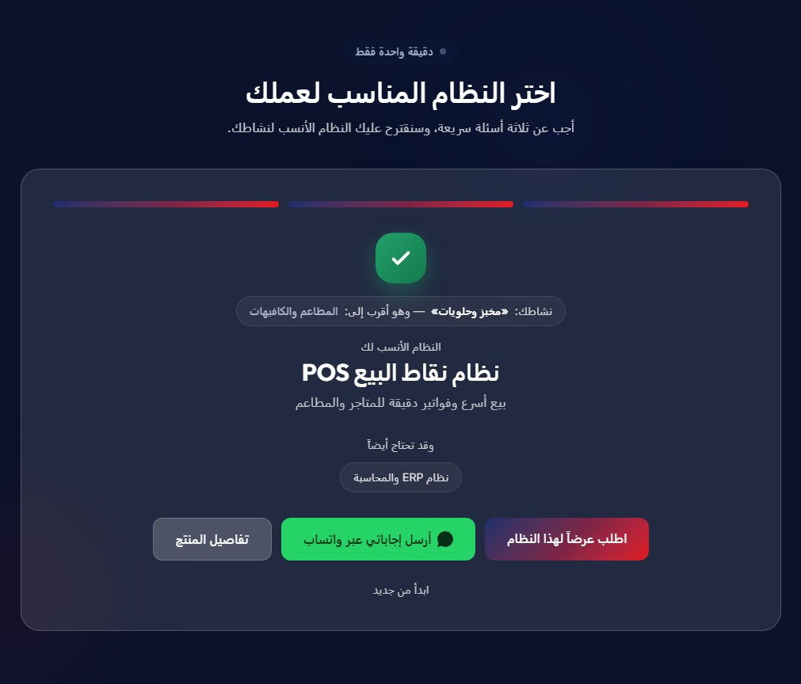
النتيجة: الزائر كتب «مخبز وحلويات» ففهم الموقع نشاطه واقترح النظام، مع زر طلب عرض وزر واتساب.
نوع النشاط6 قطاعات أو نص حر
←
أهم احتياجمبيعات، مخزون، حسابات…
←
عدد الفروعفرع أو عدة فروع
←
«جاري التفكير»تحليل ومطابقة
←
التوصيةنظام + طلب عرض جاهز
صفحة الأسئلة الشائعة
/ar/faq
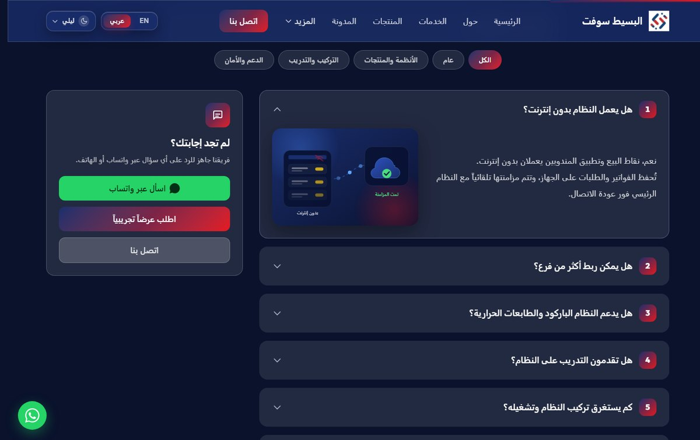
صفحة مستقلة بدل أقسام طويلة
بحث فوري وتصنيفات، وترقيم يُعاد تلقائياً عند التصفية.
مكتبة من 9 رسوم متحركة بهوية الشركة، كل رسم يشرح فكرة الجواب: العمل بدون إنترنت ثم المزامنة، ربط الفروع، النسخ الاحتياطي، الدعم…
يُختار الرسم لكل سؤال من لوحة التحكم، أو يُختار تلقائياً حسب التصنيف.
بيانات FAQ المنظمة لتظهر الأسئلة في نتائج Google.
خففت الصفحتين الرئيسية و«اتصل بنا» من الأقسام الطويلة.
صفحة 7 من 12
التقرير الشامل لتطوير موقع البسيط سوفت — نوفمبر 2026شركة البسيط سوفت
7 تجربة الجوال
حيث يأتي أغلب الزوار
فُحصت كل صفحة على شاشة بعرض 375–390px. العنوان لم يعد مقصوصاً، واسم الشركة كامل، وأُضيف ما يجعل التواصل بلمسة واحدة.
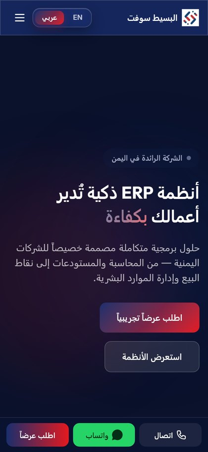
الرئيسية وشريط التواصل الثابت
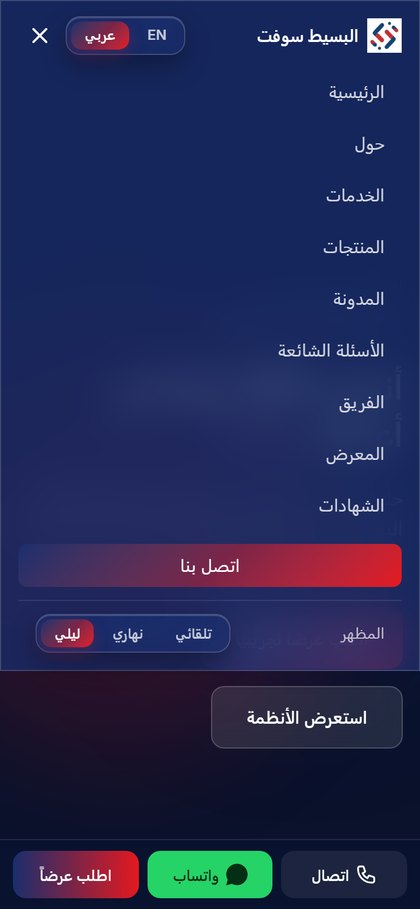
القائمة مع اختيار الوضع واللغة
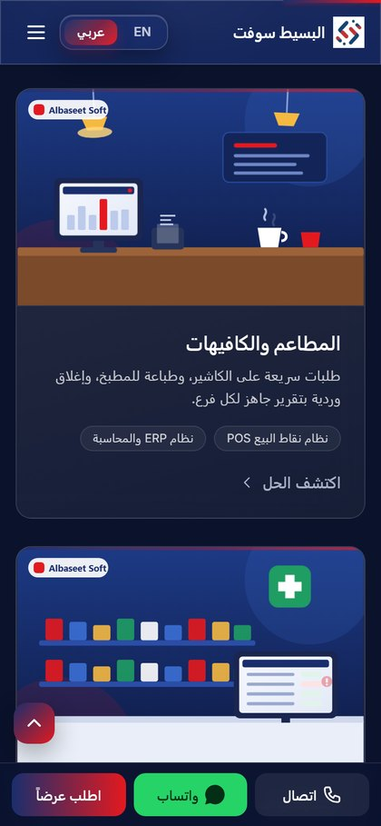
مشاهد القطاعات على الجوال
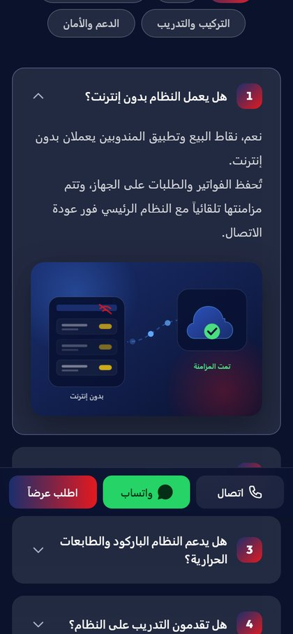
الأسئلة برسومها المتحركة
ما أُضيف للجوال
☎
شريط تواصل ثابت
«اتصال» و«واتساب» و«اطلب عرضاً» أسفل الشاشة دائماً، وزر واتساب العائم للحاسوب فقط حتى لا يتكرر.
↑
صعود متحرك للأعلى
زر يصعد بالصفحة بحركة تبدأ ببطء ثم تتسارع ثم تتباطأ، ويتوقف إن لمس الزائر الشاشة.
الصفحات الثانوية في قائمة منسدلة فلا يزدحم الشريط العلوي ولا يُضغط اسم الشركة.
◐
الوضعان الليلي والنهاري
اختيار الوضع داخل قائمة الجوال، وكل الألوان مقيسة التباين في الوضعين.
⇥
سهولة الوصول
رابط «تخطَّ إلى المحتوى»، ووصف لكل زر وأيقونة، وتنقل كامل بلوحة المفاتيح.
قبل وبعد على شاشة 375px: كان العنوان الرئيسي يمتد إلى 459px فيُقص جزء منه، وصار كله داخل الشاشة (16 – 359px). وكان يظهر من اسم الشركة 46 من 106 بكسل فقط، وصار يظهر كاملاً. وكل الرسوم المتحركة تعمل على الجوال بنفس الجودة لأنها مرسومة بالكود لا صوراً.
صفحة 8 من 12
التقرير الشامل لتطوير موقع البسيط سوفت — نوفمبر 2026شركة البسيط سوفت
8 لوحة التحكم
كل جديد يُدار دون لمس الكود
بُنيت في لوحة التحكم وحدة إدارة محتوى عامة: كل قسم جديد يُعرَّف مرة واحدة (حقوله وأعمدته)، فتُبنى له شاشات العرض والإضافة والتعديل والحذف والترتيب والتفعيل تلقائياً، بالعربية والإنجليزية.
/admin/dashboard
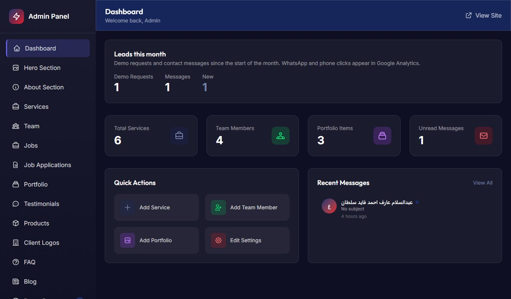
الرئيسية للوحة: بطاقة «العملاء المحتملون هذا الشهر» وعداد الطلبات الجديدة.
/admin/content/products
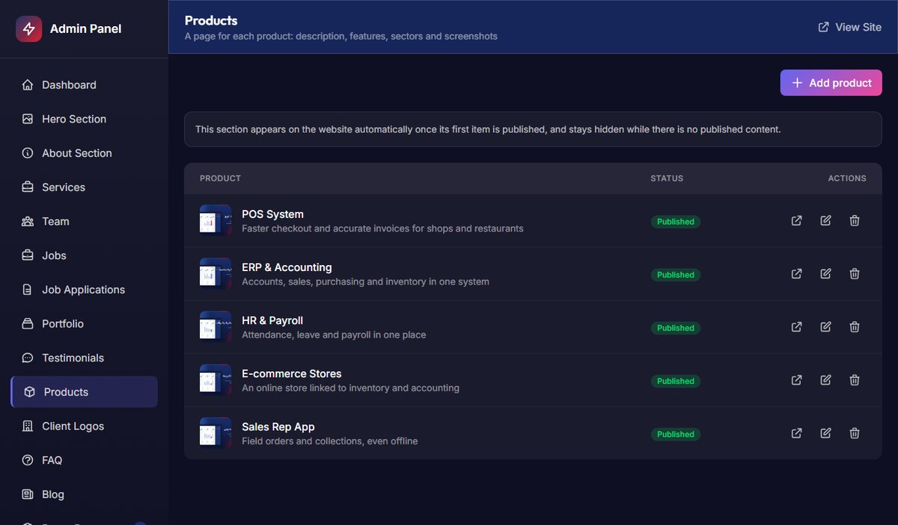
المنتجات: قائمة بالصور والحالة والترتيب، والإضافة بنموذج واحد للغتين.
طلبات العرض التجريبي: كل طلب بالنظام المطلوب وبيانات التواصل وحالته.
الأقسام الجديدة في اللوحة
القسم
ما يمكن عمله
المنتجات
اسم ووصف ومزايا وقطاعات بلغتين، صورة غلاف ولقطات شاشة، رابط مختصر، ترتيب وتفعيل.
دراسات الحالة والشعارات
التحدي والحل والنتيجة لكل مشروع، وشعارات العملاء (صور أو SVG مفحوص أمنياً).
الأسئلة الشائعة
تصنيف ورسم متحرك لكل سؤال، وظهورها في الموقع تلقائياً عند النشر.
المدونة
كتابة بصيغة Markdown، وصورة، وتاريخ نشر مجدول.
طلبات العرض
متابعة الطلبات وحالتها، وإشعار بالبريد عند وصول طلب.
الإعدادات
الأرقام من مصدر واحد، وصورة المشاركة، والخريطة وساعات العمل، وأدوات Google.
صفحة 9 من 12
التقرير الشامل لتطوير موقع البسيط سوفت — نوفمبر 2026شركة البسيط سوفت
9 الجودة والأمان والاختبارات
فحص شامل قبل التسليم
في نهاية العمل بُني فحص آلي شامل يزور كل صفحات الموقع بالعربية والإنجليزية (أكثر من 60 صفحة) مع كل رابط داخلي وصورة، وكل شاشات لوحة التحكم، ويتأكد أن أياً منها لا يعطي خطأ. كشف الفحص والمراجعة 5 مشكلات، أُصلحت كلها وأُضيف لكل منها اختبار يمنع عودتها.
#
ما وُجد
ما تم
النوع
1
شاشة «قسم من نحن» في لوحة التحكم تعطي خطأ 500 بسبب تعارض في ملف الترجمة.
أُعيدت تسمية المجموعة، واختبار يمنع تكرار المفاتيح ويطابق اللغتين.
خطأ
2
نص مُدخل من اللوحة يمكنه كسر وسم البيانات المنظمة (JSON-LD) في 4 صفحات (XSS).
ترميز آمن للبيانات المنظمة في كل الصفحات.
أمني
3
ملفات SVG المرفوعة يمكن أن تحمل سكربتات، وLaravel 12 كان يرفض SVG أصلاً.
قبول SVG مع فحص يرفض السكربتات والروابط الخارجية.
أمني
4
العناوين التي فيها «&» أو علامات تنصيص تظهر مرمّزة مرتين في Google.
ترميز مرة واحدة، واختبار للعناوين والأوصاف.
خطأ
5
نصوص منخفضة التباين في الوضع النهاري وأزرار واتساب الخضراء.
ثم php artisan preview:content --remove لحذف محتوى المعاينة.
ثالثاً: Google
رمز Search Console ومعرّف Analytics من اللوحة ← الإعدادات.
إرسال sitemap.xml من Search Console.
رابعاً: القياس النهائي
قياس TTFB وPageSpeed للجوال والحاسوب ومقارنته بالمستهدف.
متابعة الطلبات ونقرات واتساب شهرياً.
الوثائق في المستودع
الملف
المحتوى
docs/improvement/PLAN.md
الخطة المرقمة، وقائمة «مطلوب من الشركة».
docs/improvement/PROGRESS.md
سجل كل بند: ما تغيّر، وملفاته، ورقم الـ commit.
docs/improvement/DEPLOYMENT.md
دليل النشر وإعدادات الخادم وGoogle.
docs/improvement/PREVIEW.md
تشغيل محتوى المعاينة وحذفه.
منهجية التنفيذ والتحقق: نُفّذ كل بند على فرع مستقل دون المساس بـ main. بعد كل بند شُغّل الموقع محلياً وفُحص في المتصفح بالعربية والإنجليزية، على الحاسوب والجوال، وبالوضعين الليلي والنهاري، وأُضيفت له اختبارات آلية. الصور في هذا التقرير لقطات من نسخة الفرع بمحتوى معاينة تقريبي، ما عدا صورة «قبل» فهي من الموقع المنشور.